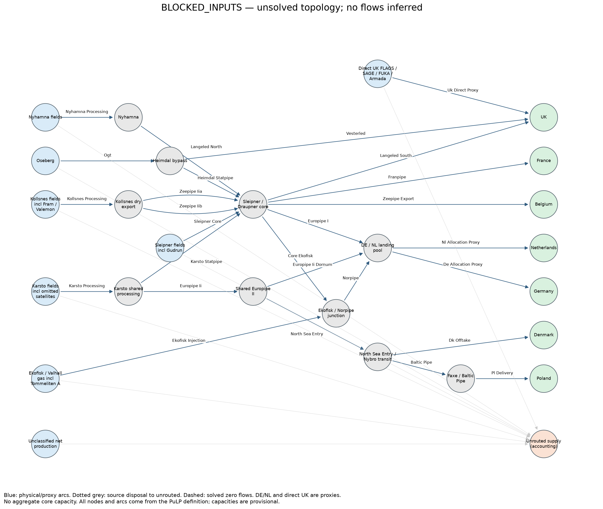

Status: BLOCKED_INPUTS. Run 20261013T105227167672Z_fc7923e9.
Open primary analyst workbook · Monthly CSV · Input-source inventory
Action required: Current forecast blocked: Complete 2024 production ledger failed: 41 components have unresolved classification or historical coverage: CD 33/9-6 DELTA, CE ALBUSKJELL, CM BRYNHILD, CN COD, CP EDDA, CX FRIGG, CY FRØY, CZ GAUPE, DC GLITNE, DH GYDA, DJ HULDRA, DM JETTE, DN JOTUN, DO KNARR, DP LILLE-FRIGG, DS MIME, DU MURCHISON, DV NORDØST FRIGG, DY ODIN, DZ OSELVAR, EA ØST FRIGG, EN TOMMELITEN GAMMA, EQ TRYM, EY VARG, FA VESLEFRIKK, FB VEST EKOFISK, FG VOLVE, FI YTTERGRYTA, FR ÆRFUGL, GJ IRPA, GK HALTEN ØST, GL YGGDRASIL (FULLA,HUGIN,MUNIN), GM FENRIS, GN SKARV SATELLITE PROJECT (IDUN NORD, ALVE NORD, ORN), GO UTSIRA HIGH PROJECT, GP BESTLA, GQ BERLING, GR EIRIN, GS SYMRA, GT VERDANDE, GU PPF project. See production_population.csv; no frozen weights, missing-to-zero or partial-population allocation. Full 2024 national = LNG + outside-boundary + mapped + UNMAPPED identity is not certified; forecast allocation remains blocked. Snøhvit forecast conversion and vintage compatibility are not approved; historical July-2025 rate guard is unchanged. KOLLSNES_EXPORT: signed maintenance reaches 156.0 mcm/day above the 143.0 envelope on 13 days (first 2027-09-03); obtain a compatible reference/maintenance contract. No clipping, zero floor or rescaling. snohvit_net_prod: returned values labelled monthly bcm exceed national monthly production; incompatible forecast unit contract. No inferred rate conversion.
| item | meaning |
|---|---|
| Run identity | 20261013T105227167672Z_fc7923e9 |
| Git commit | a34bc72f300b289c41fd1d1c12453657e1dc858a |
| Action required | Current forecast blocked: Complete 2024 production ledger failed: 41 components have unresolved classification or historical coverage: CD 33/9-6 DELTA, CE ALBUSKJELL, CM BRYNHILD, CN COD, CP EDDA, CX FRIGG, CY FRØY, CZ GAUPE, DC GLITNE, DH GYDA, DJ HULDRA, DM JETTE, DN JOTUN, DO KNARR, DP LILLE-FRIGG, DS MIME, DU MURCHISON, DV NORDØST FRIGG, DY ODIN, DZ OSELVAR, EA ØST FRIGG, EN TOMMELITEN GAMMA, EQ TRYM, EY VARG, FA VESLEFRIKK, FB VEST EKOFISK, FG VOLVE, FI YTTERGRYTA, FR ÆRFUGL, GJ IRPA, GK HALTEN ØST, GL YGGDRASIL (FULLA,HUGIN,MUNIN), GM FENRIS, GN SKARV SATELLITE PROJECT (IDUN NORD, ALVE NORD, ORN), GO UTSIRA HIGH PROJECT, GP BESTLA, GQ BERLING, GR EIRIN, GS SYMRA, GT VERDANDE, GU PPF project. See production_population.csv; no frozen weights, missing-to-zero or partial-population allocation. Full 2024 national = LNG + outside-boundary + mapped + UNMAPPED identity is not certified; forecast allocation remains blocked. Snøhvit forecast conversion and vintage compatibility are not approved; historical July-2025 rate guard is unchanged. KOLLSNES_EXPORT: signed maintenance reaches 156.0 mcm/day above the 143.0 envelope on 13 days (first 2027-09-03); obtain a compatible reference/maintenance contract. No clipping, zero floor or rescaling. snohvit_net_prod: returned values labelled monthly bcm exceed national monthly production; incompatible forecast unit contract. No inferred rate conversion. |
| Forecast origin (UTC) | 2026-10-01T00:00:00+00:00 |
| Delivery horizon | 2026-11 to 2029-12; 38 monthly deliveries |
| Prospective assumptions | provisional_kollsnes_143; F2.2 provisional capacities approved, complete population and Snøhvit inputs still gated; synthetic fixtures are manufactured |
| Monthly flows | One target month. Seven nonnegative physical/allocation sinks in bcm; exports exclude unrouted gas. Unclassified supply is included in unrouted, never added twice. |
| Capacities | One asset/month. Monthly available capacity is the calendar-day sum of technical minus signed maintenance mcm/day, divided by 1000. Shared asset limits apply to the sum of its arcs; monthly feasibility is not daily scheduling. |
| Comparisons | One month/group. UK; FR+BE; NL+DE; Baltic Pipe (PL); DK. These overlap country rows and must not be added to them. Unavailable references and errors are missing, never zero. |
| Network flows | One month/arc, including explicit disposal arcs. Arc flows can be nonunique. DE/NL are landing-pool allocation proxies; these are not observed nominations. |
| Diagnostics | Independent solver mass balance/capacity residuals in bcm; not forecast accuracy. Unrouted gas is accounting disposal, not demonstrated curtailment. |
| Input sources | Every required or consumed source and explicit assumption, with identifier, dates, units, transformation and availability status. Exact tables and source metadata are under provenance/inputs and provenance/source_metadata.json. |
| Preferences | Static soft routing shares from earlier complete nonnegative seven-destination baskets; capacity constraints can force rerouting. Price-free objective: maximum exports, minimum L1 deviation, then smallest worst fractional shortfall. |
| Settings | Resolved run request. Canonical model, registry, fixed evaluation policy and source code snapshots are in provenance; manifest records hashes and Git identity. |
| Missing values | Unavailable means not retrieved, unsupported, incompatible or unsolved. It is never an assumed zero. Synthetic references are not invented. |
| Boundaries | UK United Kingdom; FR France; BE Belgium; NL Netherlands; DE Germany; DK Danish gross sink; PL Poland delivery. Historical DK signed net allocation and Poland-labelled Nybro entry are incompatible gross-export comparisons. |
| Country interpretation | UK combines receiving routes; FR/BE represent modelled Dunkerque/Zeebrugge corridors; DE/NL are country-allocation proxies in a shared landing pool; DK/PL are modelled corridor allocations. These seven sinks are not seven independently validated terminal forecasts. Combined comparison groups overlap them. |
| Evaluation | Prospective only: no actuals or scores; historical date guards and 2026 holdout remain locked. |
| month | UK_volume_bcm | FR_volume_bcm | BE_volume_bcm | NL_volume_bcm | DE_volume_bcm | DK_volume_bcm | PL_volume_bcm | total_exports_bcm | unrouted_supply_bcm | pipeline_supply_proxy_bcm | unclassified_supply_bcm | solver_status | forecast_origin |
|---|---|---|---|---|---|---|---|---|---|---|---|---|---|
| 2026-11-01 | None | None | None | None | None | None | None | None | None | None | None | BLOCKED_INPUTS | 2026-10-01T00:00:00+00:00 |
| 2026-12-01 | None | None | None | None | None | None | None | None | None | None | None | BLOCKED_INPUTS | 2026-10-01T00:00:00+00:00 |
| 2027-01-01 | None | None | None | None | None | None | None | None | None | None | None | BLOCKED_INPUTS | 2026-10-01T00:00:00+00:00 |
| 2027-02-01 | None | None | None | None | None | None | None | None | None | None | None | BLOCKED_INPUTS | 2026-10-01T00:00:00+00:00 |
| 2027-03-01 | None | None | None | None | None | None | None | None | None | None | None | BLOCKED_INPUTS | 2026-10-01T00:00:00+00:00 |
| 2027-04-01 | None | None | None | None | None | None | None | None | None | None | None | BLOCKED_INPUTS | 2026-10-01T00:00:00+00:00 |
| 2027-05-01 | None | None | None | None | None | None | None | None | None | None | None | BLOCKED_INPUTS | 2026-10-01T00:00:00+00:00 |
| 2027-06-01 | None | None | None | None | None | None | None | None | None | None | None | BLOCKED_INPUTS | 2026-10-01T00:00:00+00:00 |
| 2027-07-01 | None | None | None | None | None | None | None | None | None | None | None | BLOCKED_INPUTS | 2026-10-01T00:00:00+00:00 |
| 2027-08-01 | None | None | None | None | None | None | None | None | None | None | None | BLOCKED_INPUTS | 2026-10-01T00:00:00+00:00 |
| 2027-09-01 | None | None | None | None | None | None | None | None | None | None | None | BLOCKED_INPUTS | 2026-10-01T00:00:00+00:00 |
| 2027-10-01 | None | None | None | None | None | None | None | None | None | None | None | BLOCKED_INPUTS | 2026-10-01T00:00:00+00:00 |
| 2027-11-01 | None | None | None | None | None | None | None | None | None | None | None | BLOCKED_INPUTS | 2026-10-01T00:00:00+00:00 |
| 2027-12-01 | None | None | None | None | None | None | None | None | None | None | None | BLOCKED_INPUTS | 2026-10-01T00:00:00+00:00 |
| 2028-01-01 | None | None | None | None | None | None | None | None | None | None | None | BLOCKED_INPUTS | 2026-10-01T00:00:00+00:00 |
| 2028-02-01 | None | None | None | None | None | None | None | None | None | None | None | BLOCKED_INPUTS | 2026-10-01T00:00:00+00:00 |
| 2028-03-01 | None | None | None | None | None | None | None | None | None | None | None | BLOCKED_INPUTS | 2026-10-01T00:00:00+00:00 |
| 2028-04-01 | None | None | None | None | None | None | None | None | None | None | None | BLOCKED_INPUTS | 2026-10-01T00:00:00+00:00 |
| 2028-05-01 | None | None | None | None | None | None | None | None | None | None | None | BLOCKED_INPUTS | 2026-10-01T00:00:00+00:00 |
| 2028-06-01 | None | None | None | None | None | None | None | None | None | None | None | BLOCKED_INPUTS | 2026-10-01T00:00:00+00:00 |
| 2028-07-01 | None | None | None | None | None | None | None | None | None | None | None | BLOCKED_INPUTS | 2026-10-01T00:00:00+00:00 |
| 2028-08-01 | None | None | None | None | None | None | None | None | None | None | None | BLOCKED_INPUTS | 2026-10-01T00:00:00+00:00 |
| 2028-09-01 | None | None | None | None | None | None | None | None | None | None | None | BLOCKED_INPUTS | 2026-10-01T00:00:00+00:00 |
| 2028-10-01 | None | None | None | None | None | None | None | None | None | None | None | BLOCKED_INPUTS | 2026-10-01T00:00:00+00:00 |
| 2028-11-01 | None | None | None | None | None | None | None | None | None | None | None | BLOCKED_INPUTS | 2026-10-01T00:00:00+00:00 |
| 2028-12-01 | None | None | None | None | None | None | None | None | None | None | None | BLOCKED_INPUTS | 2026-10-01T00:00:00+00:00 |
| 2029-01-01 | None | None | None | None | None | None | None | None | None | None | None | BLOCKED_INPUTS | 2026-10-01T00:00:00+00:00 |
| 2029-02-01 | None | None | None | None | None | None | None | None | None | None | None | BLOCKED_INPUTS | 2026-10-01T00:00:00+00:00 |
| 2029-03-01 | None | None | None | None | None | None | None | None | None | None | None | BLOCKED_INPUTS | 2026-10-01T00:00:00+00:00 |
| 2029-04-01 | None | None | None | None | None | None | None | None | None | None | None | BLOCKED_INPUTS | 2026-10-01T00:00:00+00:00 |
| 2029-05-01 | None | None | None | None | None | None | None | None | None | None | None | BLOCKED_INPUTS | 2026-10-01T00:00:00+00:00 |
| 2029-06-01 | None | None | None | None | None | None | None | None | None | None | None | BLOCKED_INPUTS | 2026-10-01T00:00:00+00:00 |
| 2029-07-01 | None | None | None | None | None | None | None | None | None | None | None | BLOCKED_INPUTS | 2026-10-01T00:00:00+00:00 |
| 2029-08-01 | None | None | None | None | None | None | None | None | None | None | None | BLOCKED_INPUTS | 2026-10-01T00:00:00+00:00 |
| 2029-09-01 | None | None | None | None | None | None | None | None | None | None | None | BLOCKED_INPUTS | 2026-10-01T00:00:00+00:00 |
| 2029-10-01 | None | None | None | None | None | None | None | None | None | None | None | BLOCKED_INPUTS | 2026-10-01T00:00:00+00:00 |
| 2029-11-01 | None | None | None | None | None | None | None | None | None | None | None | BLOCKED_INPUTS | 2026-10-01T00:00:00+00:00 |
| 2029-12-01 | None | None | None | None | None | None | None | None | None | None | None | BLOCKED_INPUTS | 2026-10-01T00:00:00+00:00 |
| month | group | unit | model_bcm | ea_actual_bcm | ea_legacy_forecast_bcm | model_minus_actual_bcm | model_minus_ea_forecast_bcm | status |
|---|---|---|---|---|---|---|---|---|
| 2026-11-01 | UK | bcm/month | None | None | None | None | None | Unavailable: prospective run does not retrieve actuals or score forecasts |
| 2026-11-01 | FR+BE | bcm/month | None | None | None | None | None | Unavailable: prospective run does not retrieve actuals or score forecasts |
| 2026-11-01 | NL+DE | bcm/month | None | None | None | None | None | Unavailable: prospective run does not retrieve actuals or score forecasts |
| 2026-11-01 | Baltic Pipe | bcm/month | None | None | None | None | None | Unavailable: prospective run does not retrieve actuals or score forecasts |
| 2026-11-01 | DK | bcm/month | None | None | None | None | None | Unavailable: prospective run does not retrieve actuals or score forecasts |
| 2026-12-01 | UK | bcm/month | None | None | None | None | None | Unavailable: prospective run does not retrieve actuals or score forecasts |
| 2026-12-01 | FR+BE | bcm/month | None | None | None | None | None | Unavailable: prospective run does not retrieve actuals or score forecasts |
| 2026-12-01 | NL+DE | bcm/month | None | None | None | None | None | Unavailable: prospective run does not retrieve actuals or score forecasts |
| 2026-12-01 | Baltic Pipe | bcm/month | None | None | None | None | None | Unavailable: prospective run does not retrieve actuals or score forecasts |
| 2026-12-01 | DK | bcm/month | None | None | None | None | None | Unavailable: prospective run does not retrieve actuals or score forecasts |
| 2027-01-01 | UK | bcm/month | None | None | None | None | None | Unavailable: prospective run does not retrieve actuals or score forecasts |
| 2027-01-01 | FR+BE | bcm/month | None | None | None | None | None | Unavailable: prospective run does not retrieve actuals or score forecasts |
| 2027-01-01 | NL+DE | bcm/month | None | None | None | None | None | Unavailable: prospective run does not retrieve actuals or score forecasts |
| 2027-01-01 | Baltic Pipe | bcm/month | None | None | None | None | None | Unavailable: prospective run does not retrieve actuals or score forecasts |
| 2027-01-01 | DK | bcm/month | None | None | None | None | None | Unavailable: prospective run does not retrieve actuals or score forecasts |
| 2027-02-01 | UK | bcm/month | None | None | None | None | None | Unavailable: prospective run does not retrieve actuals or score forecasts |
| 2027-02-01 | FR+BE | bcm/month | None | None | None | None | None | Unavailable: prospective run does not retrieve actuals or score forecasts |
| 2027-02-01 | NL+DE | bcm/month | None | None | None | None | None | Unavailable: prospective run does not retrieve actuals or score forecasts |
| 2027-02-01 | Baltic Pipe | bcm/month | None | None | None | None | None | Unavailable: prospective run does not retrieve actuals or score forecasts |
| 2027-02-01 | DK | bcm/month | None | None | None | None | None | Unavailable: prospective run does not retrieve actuals or score forecasts |
| 2027-03-01 | UK | bcm/month | None | None | None | None | None | Unavailable: prospective run does not retrieve actuals or score forecasts |
| 2027-03-01 | FR+BE | bcm/month | None | None | None | None | None | Unavailable: prospective run does not retrieve actuals or score forecasts |
| 2027-03-01 | NL+DE | bcm/month | None | None | None | None | None | Unavailable: prospective run does not retrieve actuals or score forecasts |
| 2027-03-01 | Baltic Pipe | bcm/month | None | None | None | None | None | Unavailable: prospective run does not retrieve actuals or score forecasts |
| 2027-03-01 | DK | bcm/month | None | None | None | None | None | Unavailable: prospective run does not retrieve actuals or score forecasts |
| 2027-04-01 | UK | bcm/month | None | None | None | None | None | Unavailable: prospective run does not retrieve actuals or score forecasts |
| 2027-04-01 | FR+BE | bcm/month | None | None | None | None | None | Unavailable: prospective run does not retrieve actuals or score forecasts |
| 2027-04-01 | NL+DE | bcm/month | None | None | None | None | None | Unavailable: prospective run does not retrieve actuals or score forecasts |
| 2027-04-01 | Baltic Pipe | bcm/month | None | None | None | None | None | Unavailable: prospective run does not retrieve actuals or score forecasts |
| 2027-04-01 | DK | bcm/month | None | None | None | None | None | Unavailable: prospective run does not retrieve actuals or score forecasts |
| 2027-05-01 | UK | bcm/month | None | None | None | None | None | Unavailable: prospective run does not retrieve actuals or score forecasts |
| 2027-05-01 | FR+BE | bcm/month | None | None | None | None | None | Unavailable: prospective run does not retrieve actuals or score forecasts |
| 2027-05-01 | NL+DE | bcm/month | None | None | None | None | None | Unavailable: prospective run does not retrieve actuals or score forecasts |
| 2027-05-01 | Baltic Pipe | bcm/month | None | None | None | None | None | Unavailable: prospective run does not retrieve actuals or score forecasts |
| 2027-05-01 | DK | bcm/month | None | None | None | None | None | Unavailable: prospective run does not retrieve actuals or score forecasts |
| 2027-06-01 | UK | bcm/month | None | None | None | None | None | Unavailable: prospective run does not retrieve actuals or score forecasts |
| 2027-06-01 | FR+BE | bcm/month | None | None | None | None | None | Unavailable: prospective run does not retrieve actuals or score forecasts |
| 2027-06-01 | NL+DE | bcm/month | None | None | None | None | None | Unavailable: prospective run does not retrieve actuals or score forecasts |
| 2027-06-01 | Baltic Pipe | bcm/month | None | None | None | None | None | Unavailable: prospective run does not retrieve actuals or score forecasts |
| 2027-06-01 | DK | bcm/month | None | None | None | None | None | Unavailable: prospective run does not retrieve actuals or score forecasts |
| 2027-07-01 | UK | bcm/month | None | None | None | None | None | Unavailable: prospective run does not retrieve actuals or score forecasts |
| 2027-07-01 | FR+BE | bcm/month | None | None | None | None | None | Unavailable: prospective run does not retrieve actuals or score forecasts |
| 2027-07-01 | NL+DE | bcm/month | None | None | None | None | None | Unavailable: prospective run does not retrieve actuals or score forecasts |
| 2027-07-01 | Baltic Pipe | bcm/month | None | None | None | None | None | Unavailable: prospective run does not retrieve actuals or score forecasts |
| 2027-07-01 | DK | bcm/month | None | None | None | None | None | Unavailable: prospective run does not retrieve actuals or score forecasts |
| 2027-08-01 | UK | bcm/month | None | None | None | None | None | Unavailable: prospective run does not retrieve actuals or score forecasts |
| 2027-08-01 | FR+BE | bcm/month | None | None | None | None | None | Unavailable: prospective run does not retrieve actuals or score forecasts |
| 2027-08-01 | NL+DE | bcm/month | None | None | None | None | None | Unavailable: prospective run does not retrieve actuals or score forecasts |
| 2027-08-01 | Baltic Pipe | bcm/month | None | None | None | None | None | Unavailable: prospective run does not retrieve actuals or score forecasts |
| 2027-08-01 | DK | bcm/month | None | None | None | None | None | Unavailable: prospective run does not retrieve actuals or score forecasts |
| 2027-09-01 | UK | bcm/month | None | None | None | None | None | Unavailable: prospective run does not retrieve actuals or score forecasts |
| 2027-09-01 | FR+BE | bcm/month | None | None | None | None | None | Unavailable: prospective run does not retrieve actuals or score forecasts |
| 2027-09-01 | NL+DE | bcm/month | None | None | None | None | None | Unavailable: prospective run does not retrieve actuals or score forecasts |
| 2027-09-01 | Baltic Pipe | bcm/month | None | None | None | None | None | Unavailable: prospective run does not retrieve actuals or score forecasts |
| 2027-09-01 | DK | bcm/month | None | None | None | None | None | Unavailable: prospective run does not retrieve actuals or score forecasts |
| 2027-10-01 | UK | bcm/month | None | None | None | None | None | Unavailable: prospective run does not retrieve actuals or score forecasts |
| 2027-10-01 | FR+BE | bcm/month | None | None | None | None | None | Unavailable: prospective run does not retrieve actuals or score forecasts |
| 2027-10-01 | NL+DE | bcm/month | None | None | None | None | None | Unavailable: prospective run does not retrieve actuals or score forecasts |
| 2027-10-01 | Baltic Pipe | bcm/month | None | None | None | None | None | Unavailable: prospective run does not retrieve actuals or score forecasts |
| 2027-10-01 | DK | bcm/month | None | None | None | None | None | Unavailable: prospective run does not retrieve actuals or score forecasts |
| 2027-11-01 | UK | bcm/month | None | None | None | None | None | Unavailable: prospective run does not retrieve actuals or score forecasts |
| 2027-11-01 | FR+BE | bcm/month | None | None | None | None | None | Unavailable: prospective run does not retrieve actuals or score forecasts |
| 2027-11-01 | NL+DE | bcm/month | None | None | None | None | None | Unavailable: prospective run does not retrieve actuals or score forecasts |
| 2027-11-01 | Baltic Pipe | bcm/month | None | None | None | None | None | Unavailable: prospective run does not retrieve actuals or score forecasts |
| 2027-11-01 | DK | bcm/month | None | None | None | None | None | Unavailable: prospective run does not retrieve actuals or score forecasts |
| 2027-12-01 | UK | bcm/month | None | None | None | None | None | Unavailable: prospective run does not retrieve actuals or score forecasts |
| 2027-12-01 | FR+BE | bcm/month | None | None | None | None | None | Unavailable: prospective run does not retrieve actuals or score forecasts |
| 2027-12-01 | NL+DE | bcm/month | None | None | None | None | None | Unavailable: prospective run does not retrieve actuals or score forecasts |
| 2027-12-01 | Baltic Pipe | bcm/month | None | None | None | None | None | Unavailable: prospective run does not retrieve actuals or score forecasts |
| 2027-12-01 | DK | bcm/month | None | None | None | None | None | Unavailable: prospective run does not retrieve actuals or score forecasts |
| 2028-01-01 | UK | bcm/month | None | None | None | None | None | Unavailable: prospective run does not retrieve actuals or score forecasts |
| 2028-01-01 | FR+BE | bcm/month | None | None | None | None | None | Unavailable: prospective run does not retrieve actuals or score forecasts |
| 2028-01-01 | NL+DE | bcm/month | None | None | None | None | None | Unavailable: prospective run does not retrieve actuals or score forecasts |
| 2028-01-01 | Baltic Pipe | bcm/month | None | None | None | None | None | Unavailable: prospective run does not retrieve actuals or score forecasts |
| 2028-01-01 | DK | bcm/month | None | None | None | None | None | Unavailable: prospective run does not retrieve actuals or score forecasts |
| 2028-02-01 | UK | bcm/month | None | None | None | None | None | Unavailable: prospective run does not retrieve actuals or score forecasts |
| 2028-02-01 | FR+BE | bcm/month | None | None | None | None | None | Unavailable: prospective run does not retrieve actuals or score forecasts |
| 2028-02-01 | NL+DE | bcm/month | None | None | None | None | None | Unavailable: prospective run does not retrieve actuals or score forecasts |
| 2028-02-01 | Baltic Pipe | bcm/month | None | None | None | None | None | Unavailable: prospective run does not retrieve actuals or score forecasts |
| 2028-02-01 | DK | bcm/month | None | None | None | None | None | Unavailable: prospective run does not retrieve actuals or score forecasts |
| 2028-03-01 | UK | bcm/month | None | None | None | None | None | Unavailable: prospective run does not retrieve actuals or score forecasts |
| 2028-03-01 | FR+BE | bcm/month | None | None | None | None | None | Unavailable: prospective run does not retrieve actuals or score forecasts |
| 2028-03-01 | NL+DE | bcm/month | None | None | None | None | None | Unavailable: prospective run does not retrieve actuals or score forecasts |
| 2028-03-01 | Baltic Pipe | bcm/month | None | None | None | None | None | Unavailable: prospective run does not retrieve actuals or score forecasts |
| 2028-03-01 | DK | bcm/month | None | None | None | None | None | Unavailable: prospective run does not retrieve actuals or score forecasts |
| 2028-04-01 | UK | bcm/month | None | None | None | None | None | Unavailable: prospective run does not retrieve actuals or score forecasts |
| 2028-04-01 | FR+BE | bcm/month | None | None | None | None | None | Unavailable: prospective run does not retrieve actuals or score forecasts |
| 2028-04-01 | NL+DE | bcm/month | None | None | None | None | None | Unavailable: prospective run does not retrieve actuals or score forecasts |
| 2028-04-01 | Baltic Pipe | bcm/month | None | None | None | None | None | Unavailable: prospective run does not retrieve actuals or score forecasts |
| 2028-04-01 | DK | bcm/month | None | None | None | None | None | Unavailable: prospective run does not retrieve actuals or score forecasts |
| 2028-05-01 | UK | bcm/month | None | None | None | None | None | Unavailable: prospective run does not retrieve actuals or score forecasts |
| 2028-05-01 | FR+BE | bcm/month | None | None | None | None | None | Unavailable: prospective run does not retrieve actuals or score forecasts |
| 2028-05-01 | NL+DE | bcm/month | None | None | None | None | None | Unavailable: prospective run does not retrieve actuals or score forecasts |
| 2028-05-01 | Baltic Pipe | bcm/month | None | None | None | None | None | Unavailable: prospective run does not retrieve actuals or score forecasts |
| 2028-05-01 | DK | bcm/month | None | None | None | None | None | Unavailable: prospective run does not retrieve actuals or score forecasts |
| 2028-06-01 | UK | bcm/month | None | None | None | None | None | Unavailable: prospective run does not retrieve actuals or score forecasts |
| 2028-06-01 | FR+BE | bcm/month | None | None | None | None | None | Unavailable: prospective run does not retrieve actuals or score forecasts |
| 2028-06-01 | NL+DE | bcm/month | None | None | None | None | None | Unavailable: prospective run does not retrieve actuals or score forecasts |
| 2028-06-01 | Baltic Pipe | bcm/month | None | None | None | None | None | Unavailable: prospective run does not retrieve actuals or score forecasts |
| 2028-06-01 | DK | bcm/month | None | None | None | None | None | Unavailable: prospective run does not retrieve actuals or score forecasts |
| 2028-07-01 | UK | bcm/month | None | None | None | None | None | Unavailable: prospective run does not retrieve actuals or score forecasts |
| 2028-07-01 | FR+BE | bcm/month | None | None | None | None | None | Unavailable: prospective run does not retrieve actuals or score forecasts |
| 2028-07-01 | NL+DE | bcm/month | None | None | None | None | None | Unavailable: prospective run does not retrieve actuals or score forecasts |
| 2028-07-01 | Baltic Pipe | bcm/month | None | None | None | None | None | Unavailable: prospective run does not retrieve actuals or score forecasts |
| 2028-07-01 | DK | bcm/month | None | None | None | None | None | Unavailable: prospective run does not retrieve actuals or score forecasts |
| 2028-08-01 | UK | bcm/month | None | None | None | None | None | Unavailable: prospective run does not retrieve actuals or score forecasts |
| 2028-08-01 | FR+BE | bcm/month | None | None | None | None | None | Unavailable: prospective run does not retrieve actuals or score forecasts |
| 2028-08-01 | NL+DE | bcm/month | None | None | None | None | None | Unavailable: prospective run does not retrieve actuals or score forecasts |
| 2028-08-01 | Baltic Pipe | bcm/month | None | None | None | None | None | Unavailable: prospective run does not retrieve actuals or score forecasts |
| 2028-08-01 | DK | bcm/month | None | None | None | None | None | Unavailable: prospective run does not retrieve actuals or score forecasts |
| 2028-09-01 | UK | bcm/month | None | None | None | None | None | Unavailable: prospective run does not retrieve actuals or score forecasts |
| 2028-09-01 | FR+BE | bcm/month | None | None | None | None | None | Unavailable: prospective run does not retrieve actuals or score forecasts |
| 2028-09-01 | NL+DE | bcm/month | None | None | None | None | None | Unavailable: prospective run does not retrieve actuals or score forecasts |
| 2028-09-01 | Baltic Pipe | bcm/month | None | None | None | None | None | Unavailable: prospective run does not retrieve actuals or score forecasts |
| 2028-09-01 | DK | bcm/month | None | None | None | None | None | Unavailable: prospective run does not retrieve actuals or score forecasts |
| 2028-10-01 | UK | bcm/month | None | None | None | None | None | Unavailable: prospective run does not retrieve actuals or score forecasts |
| 2028-10-01 | FR+BE | bcm/month | None | None | None | None | None | Unavailable: prospective run does not retrieve actuals or score forecasts |
| 2028-10-01 | NL+DE | bcm/month | None | None | None | None | None | Unavailable: prospective run does not retrieve actuals or score forecasts |
| 2028-10-01 | Baltic Pipe | bcm/month | None | None | None | None | None | Unavailable: prospective run does not retrieve actuals or score forecasts |
| 2028-10-01 | DK | bcm/month | None | None | None | None | None | Unavailable: prospective run does not retrieve actuals or score forecasts |
| 2028-11-01 | UK | bcm/month | None | None | None | None | None | Unavailable: prospective run does not retrieve actuals or score forecasts |
| 2028-11-01 | FR+BE | bcm/month | None | None | None | None | None | Unavailable: prospective run does not retrieve actuals or score forecasts |
| 2028-11-01 | NL+DE | bcm/month | None | None | None | None | None | Unavailable: prospective run does not retrieve actuals or score forecasts |
| 2028-11-01 | Baltic Pipe | bcm/month | None | None | None | None | None | Unavailable: prospective run does not retrieve actuals or score forecasts |
| 2028-11-01 | DK | bcm/month | None | None | None | None | None | Unavailable: prospective run does not retrieve actuals or score forecasts |
| 2028-12-01 | UK | bcm/month | None | None | None | None | None | Unavailable: prospective run does not retrieve actuals or score forecasts |
| 2028-12-01 | FR+BE | bcm/month | None | None | None | None | None | Unavailable: prospective run does not retrieve actuals or score forecasts |
| 2028-12-01 | NL+DE | bcm/month | None | None | None | None | None | Unavailable: prospective run does not retrieve actuals or score forecasts |
| 2028-12-01 | Baltic Pipe | bcm/month | None | None | None | None | None | Unavailable: prospective run does not retrieve actuals or score forecasts |
| 2028-12-01 | DK | bcm/month | None | None | None | None | None | Unavailable: prospective run does not retrieve actuals or score forecasts |
| 2029-01-01 | UK | bcm/month | None | None | None | None | None | Unavailable: prospective run does not retrieve actuals or score forecasts |
| 2029-01-01 | FR+BE | bcm/month | None | None | None | None | None | Unavailable: prospective run does not retrieve actuals or score forecasts |
| 2029-01-01 | NL+DE | bcm/month | None | None | None | None | None | Unavailable: prospective run does not retrieve actuals or score forecasts |
| 2029-01-01 | Baltic Pipe | bcm/month | None | None | None | None | None | Unavailable: prospective run does not retrieve actuals or score forecasts |
| 2029-01-01 | DK | bcm/month | None | None | None | None | None | Unavailable: prospective run does not retrieve actuals or score forecasts |
| 2029-02-01 | UK | bcm/month | None | None | None | None | None | Unavailable: prospective run does not retrieve actuals or score forecasts |
| 2029-02-01 | FR+BE | bcm/month | None | None | None | None | None | Unavailable: prospective run does not retrieve actuals or score forecasts |
| 2029-02-01 | NL+DE | bcm/month | None | None | None | None | None | Unavailable: prospective run does not retrieve actuals or score forecasts |
| 2029-02-01 | Baltic Pipe | bcm/month | None | None | None | None | None | Unavailable: prospective run does not retrieve actuals or score forecasts |
| 2029-02-01 | DK | bcm/month | None | None | None | None | None | Unavailable: prospective run does not retrieve actuals or score forecasts |
| 2029-03-01 | UK | bcm/month | None | None | None | None | None | Unavailable: prospective run does not retrieve actuals or score forecasts |
| 2029-03-01 | FR+BE | bcm/month | None | None | None | None | None | Unavailable: prospective run does not retrieve actuals or score forecasts |
| 2029-03-01 | NL+DE | bcm/month | None | None | None | None | None | Unavailable: prospective run does not retrieve actuals or score forecasts |
| 2029-03-01 | Baltic Pipe | bcm/month | None | None | None | None | None | Unavailable: prospective run does not retrieve actuals or score forecasts |
| 2029-03-01 | DK | bcm/month | None | None | None | None | None | Unavailable: prospective run does not retrieve actuals or score forecasts |
| 2029-04-01 | UK | bcm/month | None | None | None | None | None | Unavailable: prospective run does not retrieve actuals or score forecasts |
| 2029-04-01 | FR+BE | bcm/month | None | None | None | None | None | Unavailable: prospective run does not retrieve actuals or score forecasts |
| 2029-04-01 | NL+DE | bcm/month | None | None | None | None | None | Unavailable: prospective run does not retrieve actuals or score forecasts |
| 2029-04-01 | Baltic Pipe | bcm/month | None | None | None | None | None | Unavailable: prospective run does not retrieve actuals or score forecasts |
| 2029-04-01 | DK | bcm/month | None | None | None | None | None | Unavailable: prospective run does not retrieve actuals or score forecasts |
| 2029-05-01 | UK | bcm/month | None | None | None | None | None | Unavailable: prospective run does not retrieve actuals or score forecasts |
| 2029-05-01 | FR+BE | bcm/month | None | None | None | None | None | Unavailable: prospective run does not retrieve actuals or score forecasts |
| 2029-05-01 | NL+DE | bcm/month | None | None | None | None | None | Unavailable: prospective run does not retrieve actuals or score forecasts |
| 2029-05-01 | Baltic Pipe | bcm/month | None | None | None | None | None | Unavailable: prospective run does not retrieve actuals or score forecasts |
| 2029-05-01 | DK | bcm/month | None | None | None | None | None | Unavailable: prospective run does not retrieve actuals or score forecasts |
| 2029-06-01 | UK | bcm/month | None | None | None | None | None | Unavailable: prospective run does not retrieve actuals or score forecasts |
| 2029-06-01 | FR+BE | bcm/month | None | None | None | None | None | Unavailable: prospective run does not retrieve actuals or score forecasts |
| 2029-06-01 | NL+DE | bcm/month | None | None | None | None | None | Unavailable: prospective run does not retrieve actuals or score forecasts |
| 2029-06-01 | Baltic Pipe | bcm/month | None | None | None | None | None | Unavailable: prospective run does not retrieve actuals or score forecasts |
| 2029-06-01 | DK | bcm/month | None | None | None | None | None | Unavailable: prospective run does not retrieve actuals or score forecasts |
| 2029-07-01 | UK | bcm/month | None | None | None | None | None | Unavailable: prospective run does not retrieve actuals or score forecasts |
| 2029-07-01 | FR+BE | bcm/month | None | None | None | None | None | Unavailable: prospective run does not retrieve actuals or score forecasts |
| 2029-07-01 | NL+DE | bcm/month | None | None | None | None | None | Unavailable: prospective run does not retrieve actuals or score forecasts |
| 2029-07-01 | Baltic Pipe | bcm/month | None | None | None | None | None | Unavailable: prospective run does not retrieve actuals or score forecasts |
| 2029-07-01 | DK | bcm/month | None | None | None | None | None | Unavailable: prospective run does not retrieve actuals or score forecasts |
| 2029-08-01 | UK | bcm/month | None | None | None | None | None | Unavailable: prospective run does not retrieve actuals or score forecasts |
| 2029-08-01 | FR+BE | bcm/month | None | None | None | None | None | Unavailable: prospective run does not retrieve actuals or score forecasts |
| 2029-08-01 | NL+DE | bcm/month | None | None | None | None | None | Unavailable: prospective run does not retrieve actuals or score forecasts |
| 2029-08-01 | Baltic Pipe | bcm/month | None | None | None | None | None | Unavailable: prospective run does not retrieve actuals or score forecasts |
| 2029-08-01 | DK | bcm/month | None | None | None | None | None | Unavailable: prospective run does not retrieve actuals or score forecasts |
| 2029-09-01 | UK | bcm/month | None | None | None | None | None | Unavailable: prospective run does not retrieve actuals or score forecasts |
| 2029-09-01 | FR+BE | bcm/month | None | None | None | None | None | Unavailable: prospective run does not retrieve actuals or score forecasts |
| 2029-09-01 | NL+DE | bcm/month | None | None | None | None | None | Unavailable: prospective run does not retrieve actuals or score forecasts |
| 2029-09-01 | Baltic Pipe | bcm/month | None | None | None | None | None | Unavailable: prospective run does not retrieve actuals or score forecasts |
| 2029-09-01 | DK | bcm/month | None | None | None | None | None | Unavailable: prospective run does not retrieve actuals or score forecasts |
| 2029-10-01 | UK | bcm/month | None | None | None | None | None | Unavailable: prospective run does not retrieve actuals or score forecasts |
| 2029-10-01 | FR+BE | bcm/month | None | None | None | None | None | Unavailable: prospective run does not retrieve actuals or score forecasts |
| 2029-10-01 | NL+DE | bcm/month | None | None | None | None | None | Unavailable: prospective run does not retrieve actuals or score forecasts |
| 2029-10-01 | Baltic Pipe | bcm/month | None | None | None | None | None | Unavailable: prospective run does not retrieve actuals or score forecasts |
| 2029-10-01 | DK | bcm/month | None | None | None | None | None | Unavailable: prospective run does not retrieve actuals or score forecasts |
| 2029-11-01 | UK | bcm/month | None | None | None | None | None | Unavailable: prospective run does not retrieve actuals or score forecasts |
| 2029-11-01 | FR+BE | bcm/month | None | None | None | None | None | Unavailable: prospective run does not retrieve actuals or score forecasts |
| 2029-11-01 | NL+DE | bcm/month | None | None | None | None | None | Unavailable: prospective run does not retrieve actuals or score forecasts |
| 2029-11-01 | Baltic Pipe | bcm/month | None | None | None | None | None | Unavailable: prospective run does not retrieve actuals or score forecasts |
| 2029-11-01 | DK | bcm/month | None | None | None | None | None | Unavailable: prospective run does not retrieve actuals or score forecasts |
| 2029-12-01 | UK | bcm/month | None | None | None | None | None | Unavailable: prospective run does not retrieve actuals or score forecasts |
| 2029-12-01 | FR+BE | bcm/month | None | None | None | None | None | Unavailable: prospective run does not retrieve actuals or score forecasts |
| 2029-12-01 | NL+DE | bcm/month | None | None | None | None | None | Unavailable: prospective run does not retrieve actuals or score forecasts |
| 2029-12-01 | Baltic Pipe | bcm/month | None | None | None | None | None | Unavailable: prospective run does not retrieve actuals or score forecasts |
| 2029-12-01 | DK | bcm/month | None | None | None | None | None | Unavailable: prospective run does not retrieve actuals or score forecasts |
